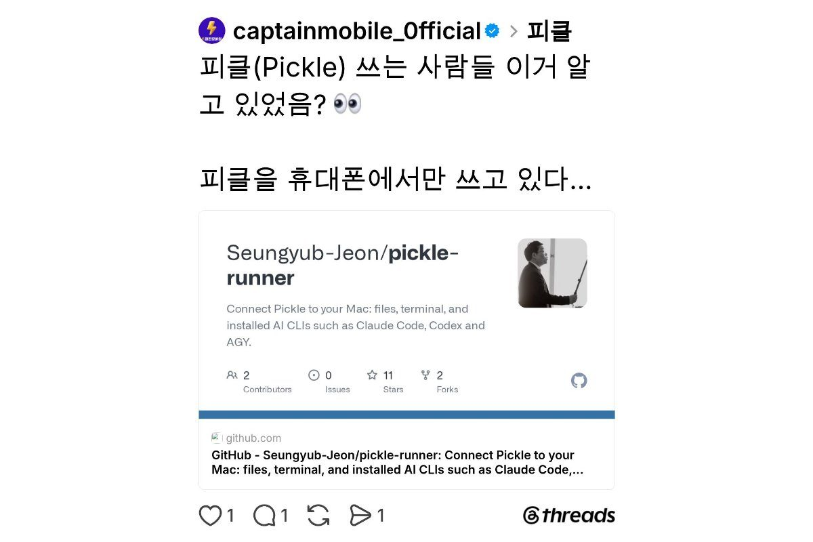

테크 · 스레드 · 2026-11-22
피클(Pickle)을 PC와 연결하는 오픈소스 프로젝트 3가지
휴대폰에서만 쓰던 AI 서비스 피클을 PC 원격 제어, 웹 활용, 로컬 AI 코딩 에이전트 연결로 확장할 수 있는 깃허브 오픈소스 3가지를 소개한다.

- 피클을 휴대폰에서만 쓰지 않고 PC와 연결해 활용할 수 있는 오픈소스들이 깃허브에 있다.
- pickle-pc-control은 피클로 Windows PC에 명령을 전달하고 PowerShell, Python 자동화까지 연결할 수 있다.
- pickle-desk는 브라우저와 Google Sheets를 이용해 PC 웹에서 피클에 작업을 요청하고 결과를 확인할 수 있다.
- pickle-runner는 피클을 Mac의 파일, 터미널, Claude Code·Codex 같은 로컬 AI CLI와 연결하는 프로젝트다.
- AI에게 질문만 하는 것을 넘어 내 컴퓨터에서 실제 작업까지 시키는 방향으로 가고 있다.